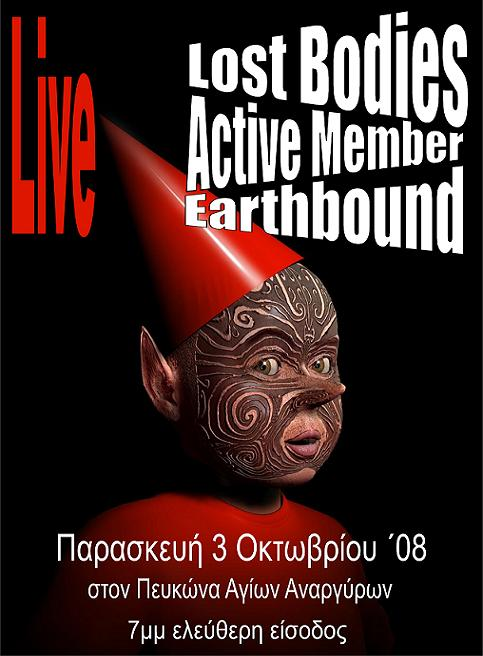

Κέντρο Ψυχικής Υγείας ΑΓΙΩΝ ΑΝΑΡΓΥΡΩΝ
Στις 3 Οκτωβρίου 2008, στις 7μμ, στον Πευκώνα των Αγίων Αναργύρων θα γίνει εκδήλωση-συναυλία με τίτλο:
«Γλιστρώντας πίσω από τη ‘γραμμή των συνόρων’».
Στη συναυλία έχουν προσφερθεί να συμμετάσχουν τα συγκροτήματα:
ACTIVE MEMBER, EARTHBOUND, LOST BODIES.
Αφετηρία για την εκδήλωση ήταν η ιστορία ενός νεαρού μετανάστη “χωρίς χαρτιά”, που ξεκίνησε από το Μπάνγκλαντες και ο οποίος, φτάνοντας, μετά από μια μακρά και περιπετειώδη διαδρομή, στην Ελλάδα, εμφανίζει ένα σοβαρό πρόβλημα ψυχικής υγείας, εξαιτίας του οποίου νοσηλεύεται στο ΨΝΑ. Μετά από μια παρατεταμένη νοσηλεία, μόνος και χωρίς κανένα υποστηρικτικό πλαίσιο, με την επικοινωνία μαζί του (ακόμα και στις συνεντεύξεις με τους θεράποντες) να γίνεται με τα λίγα αγγλικά που μιλούσε, βλέπει ότι το “όνειρο” για μια δουλειά, μέσω της οποίας θα μπορούσε να βοηθήσει την οικογένεια του, γίνεται, πλέον, “άπιαστο” και ζητάει να επιστρέψει στην πατρίδα του.
Το ΨΝΑ καλύπτει τα έξοδα δύο μελών του προσωπικού του για να τον συνοδεύσουν στο μακρινό ταξίδι πίσω στο Μπάνγκλαντες.
Μια ιστορία που μιλάει για εκατοντάδες χιλιάδες και εκατομμύρια παρόμοιες ιστορίες, για τη ζωή στην παγκόσμια “συνοριακή περιοχή”, “χωρίς χαρτιά”, χωρίς δικαιώματα, για το πώς ο ρατσισμός προκαλεί σοβαρά προβλήματα ψυχικής υγείας - με το “όνειρο για την επιβίωση” να καταλήγει, συχνά, όχι μόνο στο βυθό της θάλασσας, αλλά και στο ψυχιατρείο.
Μιλάει, επίσης, για τις τρομερές ελλείψεις σε υπηρεσίες κατάλληλες ν’ “ακούσουν”, να “κατανοήσουν” και ν΄ αντιμετωπίσουν τον “ένα στους δέκα” από τους κατοίκους αυτής της χώρας, σύμφωνα με τη γλώσσα και τον πολιτισμό του οποίου είναι φορέας.
| |
ΔΙΑΚΗΡΥΞΗ ΤΗΣ ΠΑΝΕΛΛΗΝΙΑΣ ΕΠΙΤΡΟΠΗΣ
(ΠΡΩΗΝ) ΧΡΗΣΤΩΝ ΚΑΙ ΕΠΙΖΩΝΤΩΝ ΤΗΣ ΨΥΧΙΑΤΡΙΚΗΣ
Εμείς τα άτομα και οι εκπρόσωποι συλλόγων, ομάδων και κινημάτων αυτοβοήθειας που συναντηθήκαμε την 7η και 8η Ιουνίου 2008 στη Θεσσαλονίκη συζητήσαμε διεξοδικά την ψυχιατρική πραγματικότητα στην Ελλάδα. Η κατάσταση στην Ψυχική Υγεία στην Ελλάδα δυστυχώς αντί να βελτιώνεται και να προωθεί τα δικαιώματά μας, εκβαρβαρίζεται τα τελευταία χρόνια πισωγυρίζοντας σε εποχές του αποδιοπομπαίου θύματος-ψυχικά πάσχοντος. Ολοένα και περισσότερο καθημερινές ειδήσεις των ΜΜΕ αναφέρουν κακοποιήσεις, βασανισμούς και κακομεταχείριση ατόμων που εμφάνισαν «κοινωνικά μη αποδεκτή συμπεριφορά». Γι' αυτό τον λόγο και αποφασίσαμε να δημοσιοποιήσουμε τις απόψεις μας, ώστε να μπορέσουμε έτσι να ενισχύσουμε τις προσπάθειες για την υπεράσπιση της ίδιας της αξιοπρέπειάς μας.
- Διεκδικούμε τα δικαιώματά μας σαν άνθρωποι και σαν πολίτες.
- Ζητούμε να εφαρμόζεται η ευρωπαϊκή και η ελληνική νομοθεσία για την υπεράσπιση των δικαιωμάτων μας.
- Ζητούμε να ποινικοποιηθούν οι παραβιάσεις των δικαιωμάτων μας με σαφείς διατάξεις του νόμου και όχι με γενικότητες. Να ισχύσουν οι διατάξεις του ποινικού κώδικα εναντίον κάθε παραβάτη των δικαιωμάτων μας, όπως ισχύει για κάθε πολίτη.
- Απαιτούμε την απόλυτη ενημέρωσή μας για τις παρενέργειες των χορηγούμενων ψυχοφαρμάκων. Επίσης, να έχουμε τη δυνατότητα της επιλογής εναλλακτικών μορφών θεραπείας ακόμα και χωρίς ψυχοφάρμακα. Δηλώνουμε ότι για οποιαδήποτε δραστηριότητά μας δεν θα δεχθούμε την οποιασδήποτε μορφής χορηγία ψυχοφαρμακευτικών εταιρειών.
- Η εκπροσώπηση και η παρουσία μας σε όσες κατά νόμον και κατά διατάξεων των νόμων θέσεις, να είναι θέσεις ουσίας. Αυτό θα μας δώσει τη δυνατότητα να παρεμβαίνουμε και να ακυρώνουμε τις τυχόν δυσμενείς και μεροληπτικές εναντίον μας θέσεις και αποφάσεις και όχι να έχουμε έναν διακοσμητικό ρόλο όπως έχουμε σήμερα.
- Συνέχιση των εναλλακτικών προς την παραδοσιακή ψυχιατρική προσέγγιση μορφών υποστήριξης από εθνικούς πόρους.
- Απαιτούμε την ουσιαστική και καθολική επαγγελματική μας αποκατάσταση και ζητούμε οι Κοινωνικοί Συνεταιρισμοί Περιορισμένης Ευθύνης (ΚοιΣΠΕ) να μετατραπούν σε πραγματικούς φορείς επαγγελματικής αποκατάστασης με πλειοψηφική τη συμμετοχή μας στο Διοικητικό Συμβούλιο και με αναγνώριση όλων των πολιτικών και δικαιοπρακτικών μας δικαιωμάτων.
- Να κοινοποιηθεί άμεσα από τους αρμόδιους:
▫ Ποιο είναι το προσδόκιμο επιβίωσης των καταναλωτών συνταγογραφούμενων ψυχοφαρμάκων.
▫ Ποια η αναλογία θανάτων μεταξύ των ψυχασθενών και ίσου δείγματος του γενικού πληθυσμού.
▫ Πόσες εκατοντάδες ψυχικά πάσχοντες πεθαίνουν κάθε χρόνο από τις παρενέργειες των χορηγούμενων ψυχοφαρμάκων.
▫ Γιατί δεν ενδιαφέρεται το κράτος γι αυτούς τους θανάτους.
- Καταγγέλλουμε την ψυχιατρική βία και καταστολή, τις μηχανικές και χημικές καθηλώσεις, τις προθέσεις για «ήσυχα δωμάτια θεραπευτικής απομόνωσης», την ανεξέλεγκτη χορήγηση ψυχοφαρμάκων. Καταγγέλλουμε επίσης και ζητούμε την ακύρωση των εισαγγελικών παραγγελιών για αναγκαστικό εγκλεισμό.
- Ζητούμε η ενδεχόμενη νοσηλεία μας να γίνεται με τρόπο που να σέβεται την προσωπικότητά μας.
- Αντιδρούμε στο δημόσιο εξευτελισμό μας με τη μεταφορά μας στα ψυχιατρεία σαν κακοποιούς και όχι σαν όλους τους πολίτες που χρησιμοποιούν τις υπηρεσίες υγείας.
- Καλούμε τους εργαζόμενους στο χώρο της ψυχικής υγείας να αποδεχτούνε και να εναρμονιστούνε στην καθημερινότητά τους με τις παραπάνω προτάσεις και να υπερασπιστούνε μαζί με εμάς τα δικαιώματά μας.
Διαπιστώνουμε καθημερινά ότι η προκατάληψη και ο φόβος, μας εμποδίζουν να έχουμε μια ποιότητα ζωής ακόμα και στη σπάνια περίπτωση που έχουμε κάποια εργασία, συνήθως όχι αντάξια των ικανοτήτων και δυνατοτήτων μας. Όσο για την ουσιαστική μας επανένταξη στο κοινωνικό σύνολο ο έντονος ρατσισμός που υπάρχει σε ένα μεγάλο τμήμα της κοινωνίας απέναντι στα άτομα με ψυχιατρική εμπειρία το καθιστά πολύ δύσκολο.
Απευθυνόμαστε σε όλους τους «υγιώς» σκεπτόμενους ανθρώπους, στα κόμματα και στους φορείς αυτοδιοίκησης να υποστηρίξουν ενεργά αυτόν τον αγώνα.
Πάνω απ' όλα, όμως, απευθυνόμαστε σε όλους τους φίλους και φίλες ανά την Ελλάδα, που βρίσκονται στην ίδια με εμάς κατάσταση, να ανταποκριθούν στο κάλεσμά μας και να πλαισιώσουν το κίνημά μας.
| |
Lost Bodies Live στην Πάτρα, στο αυτοδιαχειριζόμενο στέκι ΠΡΟΚΑΤ 35 Είσοδος ελεύθερη. | |
Ώρα για σκληρή δουλειά.......... | |
Τους πραγματικά μεγάλους ανθρώπους τους αναγνωρίζουμε από το ότι δεν κάνουν τίποτα.
Ρ. Φ. Γκάντερχαιμ
| |
Αυτός που γκρεμίζει το σπίτι σου, σίγουρα θέλει να δεις τον ουρανό.
Ρ.Λ.Στήβενσον
| |
Με μια φιλική κουβέντα και ένα όπλο μπορείς να πετύχεις περισσότερα, από ότι με μια φιλική κουβέντα μόνο.
Άλ Καπόνε
| |

Όποιος έκανε κάποιο λάθος και δεν το διόρθωσε, στο τέλος θα δικαιωθεί.
Γ. Τσώρτσιλ
| |
Ο μοναχικός ζει διαρκώς με τον φόβο ότι κάποιος θα τον επισκεφτεί.
Χέρμαν Χέσσε.
| |
Σύμφωνα με τους αστροφυσικούς, οι δακτύλιοι στον Κρόνο αποτελούνται αποκλειστικά από χαμένες ταξιδιωτικές αποσκευές.
Β. Φ. Μπράουν
| |
Επιτέλους...επιστρέφει! (βλέπε την από κάτω από αυτή καταχώρηση)
Δευτέρα -Τρίτη, θα είναι εδώ.
Ήρθε ο καιρός να επιστρέψω και εγώ σιγά -σιγά στο καβούκι μου και εκεί,
να περιμένω τα πρωτοβρόχια και μετά να πάω να βρω τον πλανήτη μου.
Παίρνω ομπρέλες και αδιάβροχα και...see ya.
Παραδίδω στα στιβαρά του μπράτσα και τα myspace και τα blog και την κάνω. | |
ola kanonismena !!!!!!!!!!!!!! | |
|
35 readers online
|